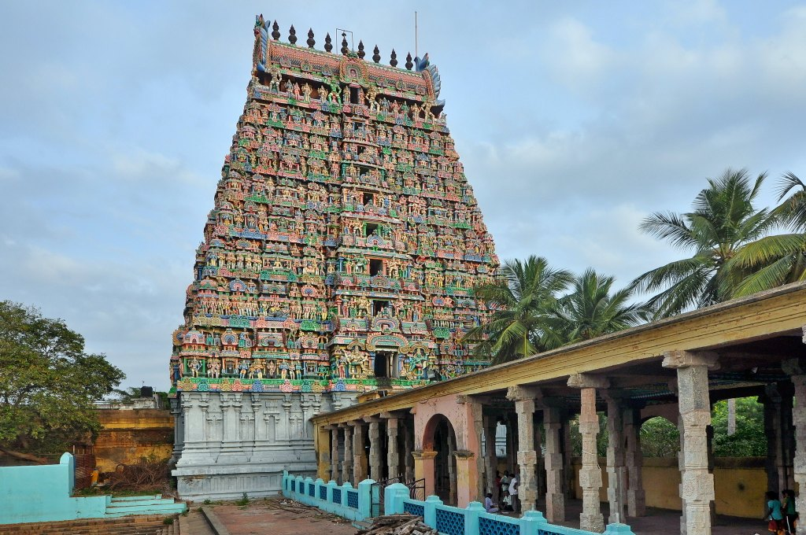

Aadhi Kumbeshwarar Temple

About:
Adi Kumbeswarar Temple, Kumbakonam is a Hindu temple dedicated to Shiva, located in the town of Kumbakonam in Thanjavur District Tamil Nadu, India. Shiva is worshiped as Adi Kumbeswarar, and is represented by the lingam. His consort Parvati is depicted as Mangalambigai Amman. The presiding deity is revered in the 7th-century-CE Tamil Saiva canonical, greatest work, the Tevaram, written by Tamil saint poets known as the Nayanmars and classified as Paadal Petra Sthalam.
Legend:
The name of the town Kumbakonam is derived from the legend associated with Kumbeswarar Temple. The pot (kumbha) is said to be of Brahma that contained the seed of all living beings on earth. The kumbha is believed to have been displaced by a pralaya (dissolution of the universe) effected by Shiva's arrow and ultimately came to rest at the spot where the town of Kumbakonam now stands. The nectar is believed to have fallen in two places - the Mahamaham tank and the Potramarai tank. This event is now commemorated in the Mahamaham festival held every 12 years. Kumbakonam was also formerly known by the Tamil name of Kudamukku. Kumbakonam is also identified with the Sangam age settlement of Kudavayil.